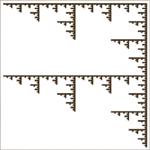

| Rather than look at several sets of lines and guess the product of their combined IFS, we reverse the process: try to guess the combination of lines that produce a given complicated picture. |
| Click the picture for a solution, after you've thought about it and tried your idea with the software. |
|  |
Return to Sample.